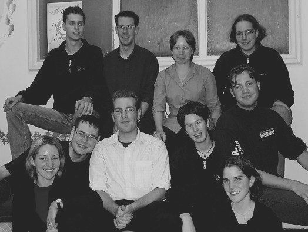

Commissie

|
(foto: Thijs Adriaans)
|
|
De commissieleden op de foto zijn (vlnr en vbnb): Wouter Struijk (penningmeester en sponsoring), Bastien Vievermans
(website & repetitieweekend), Marjan Nieuwenhuizen (decor),
Anneke Keizer (voorzitter). Op deze foto ontbreken Marieke Steegh (publiciteit) en Peter Spijker (algemeen bestuurslid) |
|